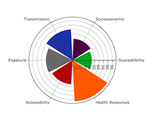
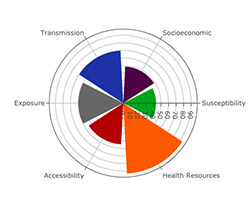
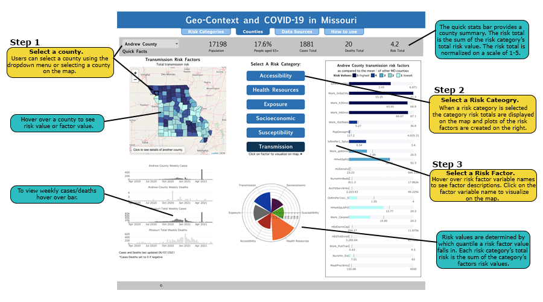
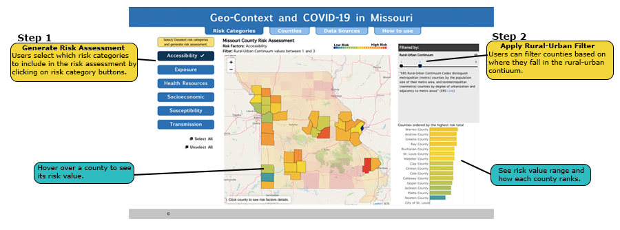

Each Missouri county has a risk assessment made up of 6 categories:
Susceptibility (Individual) Risk: How susceptible an individual in a county might be to COVID-19. The inclusion of known and possible co-morbidities and age breaks were assessed.
Transmission (Community) Risk: What the potential transmission risk of COVID-19 within a county might be. The inclusion of commuting, migration, worker types, group gatherings, and living situation.
Socioeconomic Risk:What might be some socioeconomic / demographic variables that would capture and describe the associated social context risk within that county. The inclusion of race, ethnicity, disability, insurance status, veteran status, and education level.
Accessibility Risk: What infrastructure components could be included to provide an assessment of accessibility and establish differences between counties in terms of their access to health options and care. The development and inclusion of various hospital, nursing home, and telehealth access measures as well as broadband metrics.
Health Resource Risk: What health resources are available to a county’s population to mitigate and aid in the response to the epidemic. The typical health resource measures included beds, ICU, and professional staffing measures.
Exposure Risk:Incorporated existing exposure metrics (cases, testing, deaths) as temporally collected to aid in the development of associations, correlations, and trends.
The risk assessment is represented by the windrose plot below:

Each county will be evaluated and given a risk score for each category. Risk scores are made up of risk values of the risk factors within each category. For example, in the Susceptibilty category, there is a risk factor called "Diagnosed Diabetes %". Boone county has 7.8% Diagnosed Diabetes. This value lies within the first quantile of all Missouri counties, thus the risk value = 1. Risk values range from 1 to 5.
Risk Category Score = Sum of risk values of risk factors within category.
Risk values = Quantile 1-5 of risk factor amongst Missouri County Population
Total Risk value = Sum of Risk Category Scores (normalized on a scale of 1-5 on counties dashboard)
Susceptibility (Individual) Risk: How susceptible an individual in a county might be to COVID-19. The inclusion of known and possible co-morbidities and age breaks were assessed.
Transmission (Community) Risk: What the potential transmission risk of COVID-19 within a county might be. The inclusion of commuting, migration, worker types, group gatherings, and living situation.
Socioeconomic Risk:What might be some socioeconomic / demographic variables that would capture and describe the associated social context risk within that county. The inclusion of race, ethnicity, disability, insurance status, veteran status, and education level.
Accessibility Risk: What infrastructure components could be included to provide an assessment of accessibility and establish differences between counties in terms of their access to health options and care. The development and inclusion of various hospital, nursing home, and telehealth access measures as well as broadband metrics.
Health Resource Risk: What health resources are available to a county’s population to mitigate and aid in the response to the epidemic. The typical health resource measures included beds, ICU, and professional staffing measures.
Exposure Risk:Incorporated existing exposure metrics (cases, testing, deaths) as temporally collected to aid in the development of associations, correlations, and trends.
The risk assessment is represented by the windrose plot below:

Each county will be evaluated and given a risk score for each category. Risk scores are made up of risk values of the risk factors within each category. For example, in the Susceptibilty category, there is a risk factor called "Diagnosed Diabetes %". Boone county has 7.8% Diagnosed Diabetes. This value lies within the first quantile of all Missouri counties, thus the risk value = 1. Risk values range from 1 to 5.
Risk Category Score = Sum of risk values of risk factors within category.
Risk values = Quantile 1-5 of risk factor amongst Missouri County Population
Total Risk value = Sum of Risk Category Scores (normalized on a scale of 1-5 on counties dashboard)
How to use Counties Dashboard
The Counties Dashboard lets users deep-dive into the risk assessment of each Missouri county.

How to use Risk Categories Dashboard
The Risk Categories Dashboard gives a high-level view of risk throughout the counties of Missouri. Users can generate a customized
risk assessment by selecting different combinations of risk categories. A rural-urban contiuum filter can be applied to visualize
the relationship between risk and how rural or urban a county is.
